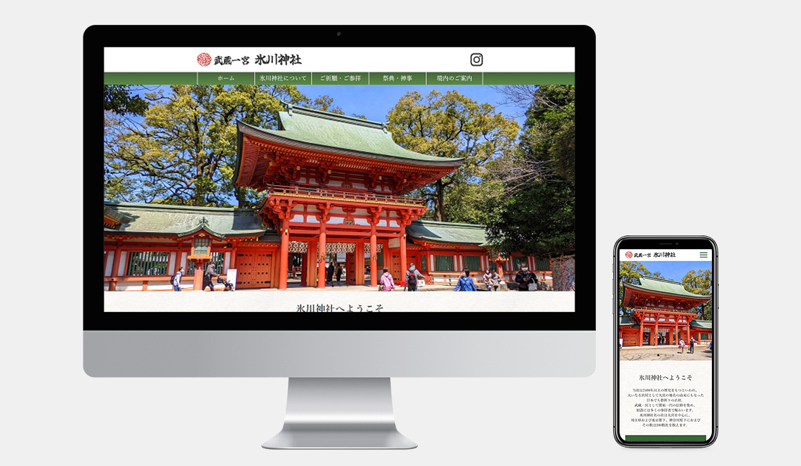

WORKS DETAIL
氷川神社
架空リニューアルサイト
Webサイト（PC、スマートフォン）
デジタルハリウッドSTUDIO 卒業制作課題
デジタルハリウッドSTUDIO 卒業制作課題

リンク
ソースコード
担当
企画 / デザイン / コーディング / 写真撮影
制作期間
2ヵ月
使用ソフト
Illustrator / Photoshop / XD / Dreamweaver
作成プロセス
氷川神社のサイトの架空リニューアル案になります。
既存のwebサイトのデザインが古く、観光客向けではないと感じたため、参拝客・観光客が増えるような新しいデザインにできないかと思い、
制作しました。
コンセプトは、『自然と歴史を感じることができる神社という点をアピールし、見た人に「行きたい」と思ってもらうサイト』です。
ターゲットはお出かけが好きな首都圏在住の20代～40代の男女です。
観光スポットやパワースポットを探している方にこの神社を知ってもらう想定で作成しました。
デザインコンセプト
- 写真を多く使い、景観の美しさをアピールする。
- 和紙のテクスチャや明朝体のフォントを使用し、全体を通して「和」を感じさせる。
- 親しみやすさを感じさせるよう、白や赤といった明るい色を使う。
ポイント
-
ページのトップには写真を大きく入れ、景観と緑の美しさをアピールするようにしました。
また、トップページにある各ページへのリンクを画像リンクにしたり、祭典の解説に高画質の写真を差し込んだりすることで、神社の実際の光景がよく分かるようにしました。
-
ご祈願・ご参拝のページでは各種祈願の一覧を表にまとめて見やすくなるようにしています。
スマートフォン版では表が長くなるため通常時は折りたたまれるようになっており、タップで開く仕様になっています。
-
境内のご案内についてのページでは、map要素を使うことで案内図にクリッカブルマップの機能を追加しました。
案内図の中にある神社の名称をクリックすると、PC版ではモーダルウィンドウで神社の説明が表示されます。
スマートフォン版ではページ下部にある説明の項目にスクロールするようになっています。